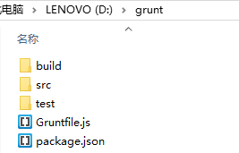

用Grunt搭建自动化的web前端开发环境
- 安装node.js，然后在控制台中安装全局的grunt-cli
$ npm install -g grunt-cli 新建一个文件夹grunt，里边新建下面的几个文件，

在package.json中写下面的内容，不然的话grunt插件安装不上，example - json
1
2
3
4
5
6
7{
"name": "grunt_test",
"version": "1.0.0",
"devDependencies": {
}
}然后右键，git bash，安装grunt
$ npm install grunt --save-dev，会生成node_modules目录详细配置package.json(需要自己配置)，在命令行输入
$ npm i批量安装插件，这里注意一定要安装完全，(这样的好处是不用像$ npm install grunt-contrib-jshint --save-dev一个一个安装)，example - json
1
2
3
4
5
6
7
8
9
10
11
12
13
14
15
16{
"name": "grunt_test",
"version": "1.0.0",
"devDependencies": {
"grunt": "^1.0.1",
"grunt-contrib-clean": "^1.0.0",
"grunt-contrib-concat": "^1.0.1",
"grunt-contrib-csslint": "^1.0.0",
"grunt-contrib-htmlmin": "^1.0.0",
"grunt-contrib-cssmin": "^1.0.0",
"grunt-contrib-imagemin": "^1.0.0",
"grunt-contrib-jshint": "^1.0.0",
"grunt-contrib-uglify": "^1.0.1",
"grunt-contrib-watch": "^1.0.0"
}
}配置Gruntfile.js(看API配置)， (.csslint文件自己写)，可参考下面代码：
example - js
- csslint
1
2
3
4
5
6
7
8
9
10
11
12
13
14
15
16
17
18
19
20
21
22
23
24
25
26
27
28
29
30
31
32
33
34
35
36
37
38
39
40
41
42
43
44
45
46
47
48
49
50
51
52
53
54
55
56
57
58
59
60
61
62
63
64
65
66
67
68
69
70
71
72
73
74
75
76
77
78
79
80
81
82
83
84
85
86
87
88
89
90
91
92
93
94
95
96
97module.exports = function (grunt) {
grunt.initConfig({
pkg: grunt.file.readJSON('package.json'),
concat: {
options: {
separator: ';'
},
dist: {
src: ['src/js/*.js'],
dest: 'build/js/<%= pkg.name %>.js'
}
},
htmlmin: {
dist: {
options: {
removeComments: true,
collapseWhitespace: true
},
files: [{
expand: true,
cwd: 'src/',
src: '**/*.html',
dest: 'build/'
}]
}
},
cssmin: { //压缩css
options: {
stripBanners: true,
banner: '/*! <%= pkg.name %>-<%= pkg.version %>.css <%= grunt.template.today("dd-mm-yyyy") %> */\n'
},
files: {
src: ['src/css/*.css'],
dest: 'build/css/<%= pkg.name %>.min.css'
}
},
uglify: { //压缩js
options: {
stripBanners: true,
banner: '/*! <%= pkg.name %>-<%= pkg.version %>.js <%= grunt.template.today("dd-mm-yyyy") %> */\n'
},
files: {
src: ['src/js/*.js'],
dest: 'build/js/<%= pkg.name %>.min.js'
}
},
csslint: { /*检查css语法*/
options: {
csslintrc:'.csslint'
},
files: ['src/css/*.css', 'test/css/*.css']/*上面files的快捷方式*/
},
jshint: {
options: {
globals: {
jQuery: true,
console: true,
module: true,
document: true
}
},
files: ['Gruntfile.js', 'src/js/*.js', 'test/js/*.js']
},
imagemin: {
dist: {
options: {
optimizationLevel: 5
},
files: [{
expand: true,
cwd: 'src/images/',
src: ['**/*.{png,jpg,jpeg,gif,webp,svg}'],
dest: 'build/images/'
}]
}
},
watch: {
build: {
files: ['src/js/*.js','src/css/*.css'],
tasks: ['jshint','csslint','uglify'],
options: {spawn: false}
}
}
});
grunt.loadNpmTasks('grunt-contrib-concat');
grunt.loadNpmTasks('grunt-contrib-htmlmin');
grunt.loadNpmTasks('grunt-contrib-cssmin');
grunt.loadNpmTasks('grunt-contrib-uglify');
grunt.loadNpmTasks('grunt-contrib-csslint');
grunt.loadNpmTasks('grunt-contrib-jshint');
grunt.loadNpmTasks('grunt-contrib-imagemin');
grunt.loadNpmTasks('grunt-contrib-watch');
grunt.registerTask('test', ['jshint','csslint','watch']);
grunt.registerTask('default', ['concat','htmlmin','cssmin', 'uglify','csslint','jshint']);
grunt.registerTask('img', ['imagemin']); //grunt imagemin命令
};把项目文件放进src，
$ grunt命令压缩html，css，js，查错，$ grunt imagemin压缩图片，压缩后的文件都在build文件夹中修改链接和位置，就可以传到github上了(package.json和Gruntfile.js文件也要上传到github)
注意:-Grunt中文文档
-压缩代码前需要把如Angular.js,Bootstrap.min.js的文件单独分开